Assignment 6: Molding and Casting!
Jessica Douma | HCDE 533 | Autumn 2022

Molding and Casting - Part 1
For this part of the assignment, we had to 3D print our mold for a mold - meta. I started by designing the piece I wanted to cast next week. I decided I wanted to do a symmetrical polyhedron since it was more fun than a sphere but still a relatively simple shape. Because it was symmetrical, I also only had to create one mold as opposed to two. I went through the following steps to create my mold:
|
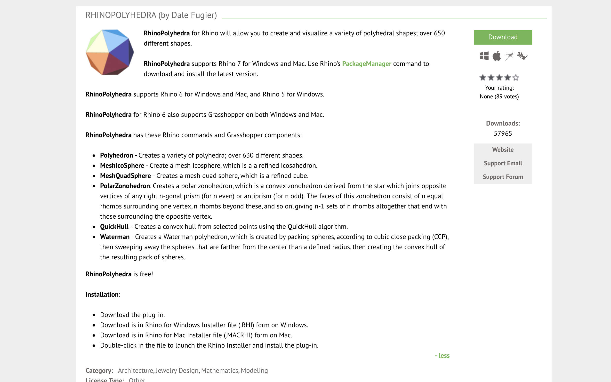
1. I downloaded the RhinoPolyhedra Grasshopper package to easily create a polyhedron. |
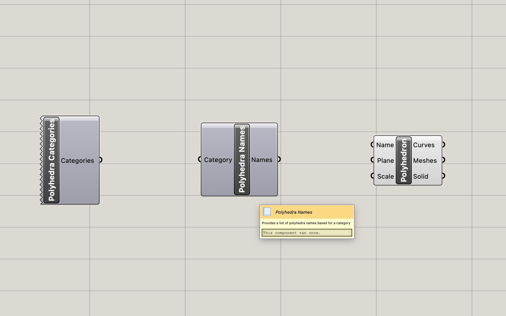
2. In Grasshopper, I used the RhinoPolyhedra Polyhedron component to create the shape. The component showed that I need to choose a 'Name'. Adding the Polyhedron Name component, showed me I needed to specify a 'Polyhedron Category'. |
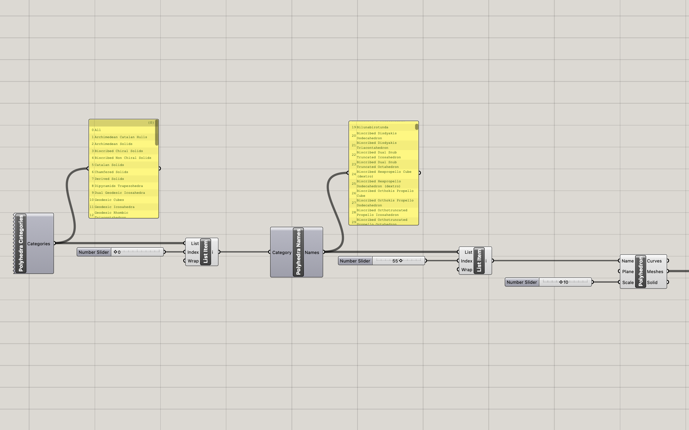
3. Both the category and name components provided a list. I used the List Item component and a number slider to be able to select an option. While the number slider easily let me scroll through the different shape options, I wanted to know what the actual options were, so I also connected the lists to a panel component so that I could read all the outputs. |
|
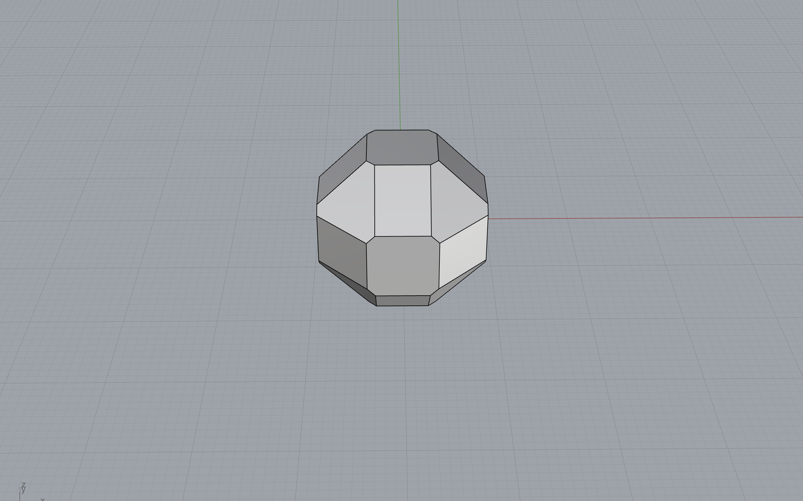
4. I scrolled through the different options I chose a shape that was symmetrical and had a flat edge for the sprue to connect to. I specified the scale of the shape and baked it. |
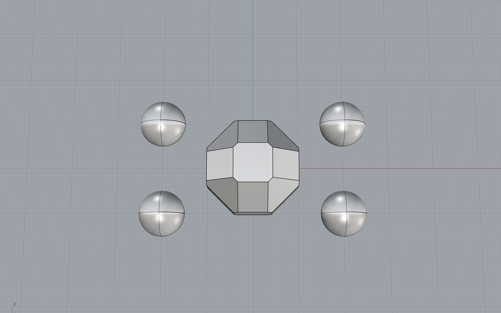
5. Next I added four spheres around the polyhedron that would be used as the keys for the mold. I decided on a 10mm diameter for each one since I really wanted the molds to lock together well, and since the spheres would be cut in half, this meant that only 5mm of it would be used in the actual mold. |
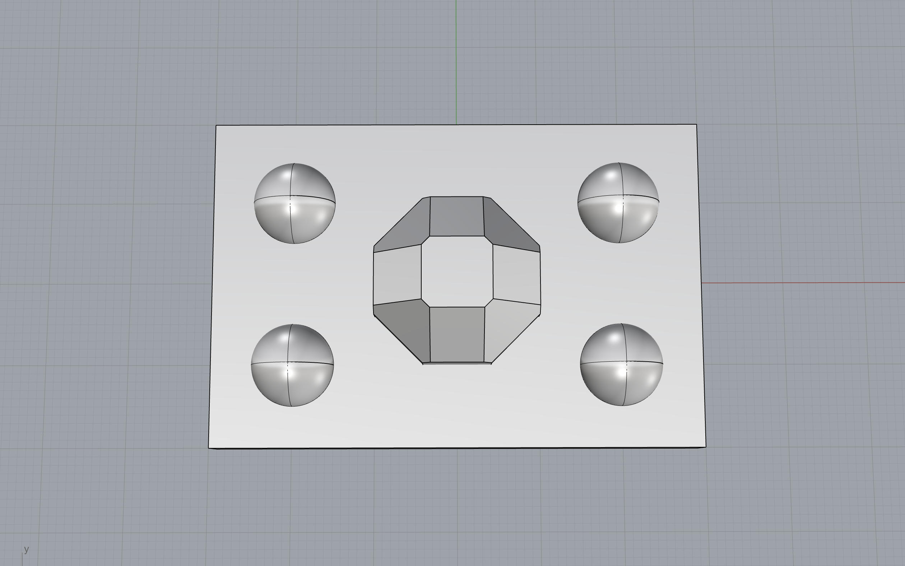
6. Next, I added a box around the objects such that it was at least 5mm wider in every direction of a shape being molded. I wanted to make sure the walls of my mold were thick enough so that the silicone mold wouldn't be too flexible when I went to cast my final object. |
|
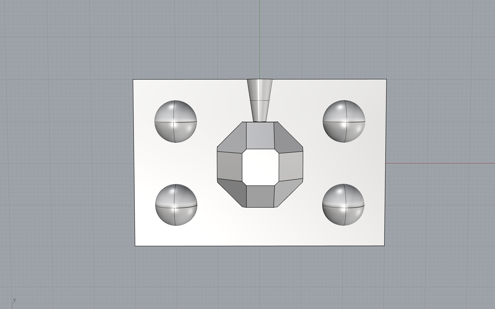
7. Next, I drew a truncated cone that would serve as the pouring hole and positioned it such that it was flush withe polyhedron and extended to the edge of the box. |
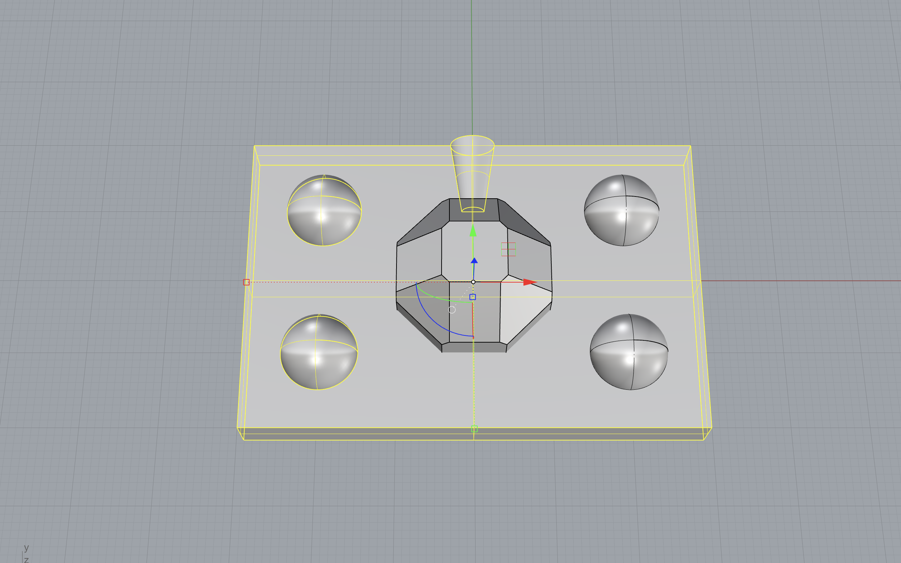
8. Using the command BooleanUnion, I combined two of the spheres and the pouring hole to the box. |
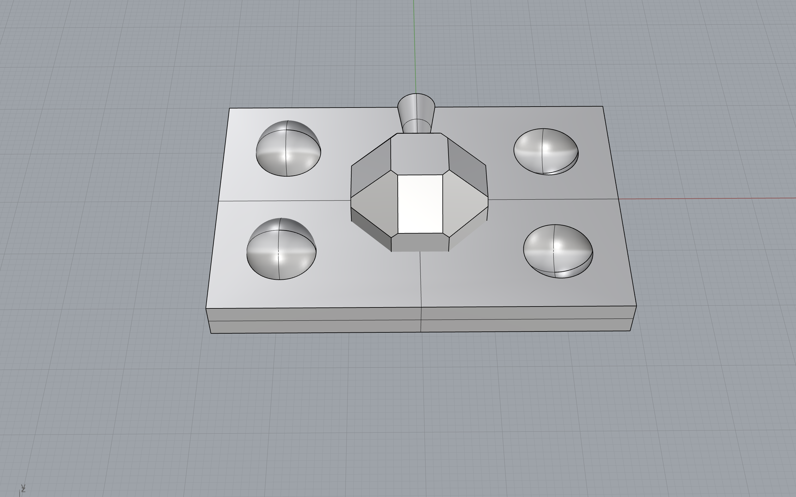
9. Using the command BooleanSplit, I removed two of the spheres from the box to make the key holes. |
|
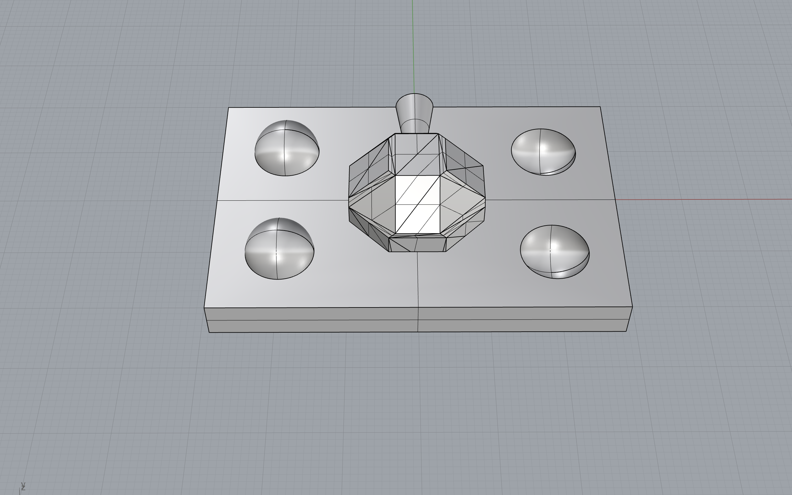
10. Next, I tried to union the polyhedron with the resulting box but was having a lot of issues since the polyhedron was a mesh and wasn't unioning correctly. So I used the MeshToNURB command on the polyhedron to convert it to a solid and unioned that with the box. |
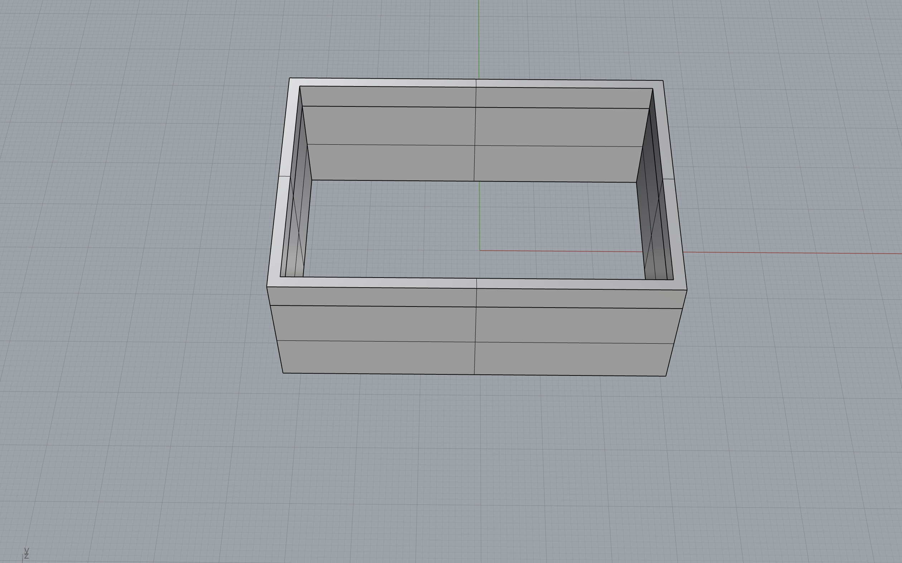
11. To create the outer wall for the mold, I created two boxes; one that was .1mm wider and longer than the mold base I just created, and another that was 2mm wider and longer than the mold base. Both boxes were also 15mm taller than the highest point of the mold base to ensure the bottom of the silicone mold would be thick enough. I used the BooleanSplit command to remove the smaller box from the larger box. |

12. I then printed the pieces to ensure that the base of the mold slid into the mold wall without any gaps and success! I printed one more 3D mold so that I could pour and cure both halves of the mold at the same time. |
After printing the 3D mold, I was worried that the pouring hole was too small... So I designed a second version of the mold with a slightly larger pour hole and printed two more molds so that they would be ready to go for next week.
Molding and Casting - Part 2
With my 3D printed molds for molds ready to go, I was ready to cast my molds. I prepared my work space by laying down paper in case I spilled anything, and laying out all of my materials, including 3 cups for mixing, a popsicle stick for mixing, gloves, oomoo, and the molds. I placed the molds on a piece of cardboard so that I could easily move them after pouring the oomoo without having to pick up each one and risk making a mess - this worked super well and I would do it again since not all of my molds created a perfect seal.
I eyeballed how much oomoo I thought I would need, and carefully poured parts A and B of the oomoo into separate cups. Once they were both poured, I poured them both into a third cup, using the popsicle stick to scrape the edges of each cup. I vigorously mixed the two parts, paying extra attention to make sure the bottom of the cup was well mixed, and the material in the crevices of the cup were being thoroughly combined as well. My arm got tired after a while and I had to tap in my partner to help me make sure everything was well combined.


From there, I poured the oomoo into each mold. I poured a small, steady stream from very high up to try to reduce the amount of air bubbles that poured into the mold. This worked surprisingly well and I couldn't see any air bubbles form as I poured the silicone mixture. I evently distrubuted the silicone into each mold and set them aside over night to cure.

When I returned to them in the morning they were solid - SUCCESS! As I tried to release each of the molds, I was super thankful that I designed my mold to have a removeable bottom; I honestly don't think I would have been able to remove the silicone molds without them. With my silicone molds released from the 3D printed molds, I perfomed a bit of post-processing to remove the extra material along the edges and I was ready to start casting.


Since I wasn't able to make it to campus this week to pick up the hydrostone, I used Perfect Cast from the class bill of materials's list instead. To begin casting, I used rubber bands to hold my silicone molds together. I decided to start with the mold with the larger pour hole and I'm really glad I did since it was a bit difficult to get it completely full and ensure that there were no air bubbles. Similarly to the oomoo, I used a plastic cup and popsicle stick to mix the materials, being sure to add the Perfect Cast to the water and not the other way around. I used a large plastic syringe to pour the Perfect Cast into the mold and this worked super well since it gave me control of the pouring speed and allowed me to pour in the mixture without making a mess. I poured my first cast, waited about an hour and then removed the mold. I had a cute little polyhedron with no major issues! I set it aside to fully dry for another 24 horus, and repeated the process a second time for the second cast. This time around, I poured the casting material, thought the mold was full after tapping it on the table to release any air bubbles and let it dry. When I opened up the mold an hour later, I found that the mold only got filled half way :(. So the next time around, I was super careful with my pouring. I poured the mixture super slowly, and down the side, being careful that the casting material never completely covered the pouring hole, which allowed for the air to properly come out. When the mold was full, I took a toothpick and gently moved it up adn down through the pouring hole to ensure there were no major air bubbles. I followed this process for the rest of my three casts and it worked super well.
After all casts had completely dried for 24 hours, I tidied them up with some post processing. I snapped off the top that was left from the pouring hole, and used a nail file to sand down the top so it was flush with the rest of the surface. I used the nail file to soften the parting lines as well. In the end I had 4 identical casts :)
Source Files
Molding and Casting Source Files
Grasshopper file for generating polyhedrons
Rhino model of mold
Acknowledgements
Emily Rowland for helping me think through the mold part of the assignment.